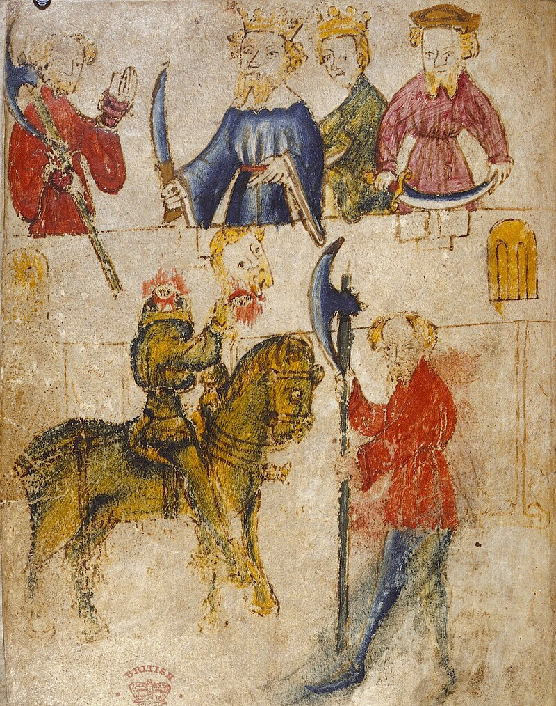

Sir Gawain es hijo de la hechicera Morgause y del Rey de Lothian: Lot. Sus hermanos son Sir Gaheris y Sir Gareth, que murieron a manos de Lanzarote del Lago, y Sir Agravain. También es primo de Ginebra y Mordred. Es uno de los más importantes caballeros de la Mesa Redonda que aparece muy tempranamente durante el desarrollo de las leyendas artúricas. Es uno del selecto número de caballeros de la Mesa Redonda a los que se refiere como «los más grandes» de los caballeros, más notablemente en Sir Gawain y el Caballero Verde.
El Caballero Verde
Sin duda, la leyenda que más se conoce de Sir Gawain es la del Caballero Verde. Un buen día, mientras Gawain galopaba a caballo junto a Perceval se le aparece un guerrero que no tenía nada de humano, que estaba bañado de verde completamente, y con una gigantesca hacha en una de sus manos. El Caballero Verde lo reta a un duelo al cual Gawain acepta risueñamente. El reto consistía en esto: Gawain golpearía al Caballero Verde cuando este estuviera totalmente desarmado, y si no conseguía matarlo, el Caballero Verde realizaría el mismo proceso con él, pero con su hacha. Gawain le corta la cabeza al Caballero Verde con su espada y cuando por fin se da por vencido, la cabeza del misterioso caballero vuelve a su sitio, volviendo a formar parte de su cuerpo. Ahora el Caballero Verde debía de repetir el mismo proceso con Gawain, pero le da un año para que se prepare para combatir frente a él.
Al año siguiente, Sir Gawain aparece junto a Lancelot del Lago en los dominios del señor de Bertilak, un valvasor que gobernaba las tierras de Hautdesert, y que acoge a los dos caballeros en su castillo. Gawain pide ayuda al señor del castillo y a su dama, Lady Ann, para encontrar al Caballero Verde. Sir Bertilak le aseguró a Gawain que no tenía por qué preocuparse y le aseguró que él sabía perfectamente donde se encontraba el Caballero Verde. Unos días después, Gawain parte junto con Sir Bertilak y Lancelot hacia el lugar donde supuestamente se encontraba el Caballero Verde. El señor de Hautdesert los deja justo en la entrada de la cueva del caballero. Gawain se adentra junto con Lancelot en la cueva donde el Caballero Verde les espera, afilando su hacha. Gawain se despoja de todas sus armaduras y de su jubón, pero se dejó puesto un cinturón que Lady Ann le dijo que le salvaría del golpe del Caballero Verde. El Caballero Verde se detiene dos veces antes de golpearle en el cuello, y a la tercera lo hace, aunque solo le abre un leve corte a Gawain en el cuello. Después de esto tanto Gawain como Lancelot comprueban que el Caballero Verde sufre una transformación y se convierte en Sir Bertilak que estaba aprisionado dentro del avatar del Caballero Verde por culpa del Santo Grial. Sir Bertilak había vivido cientos de años, y el Grial lo había castigado a que para morir debía de retar a un caballero de la nobleza a un duelo frente a él, lo cual Gawain cumplió, y Bertilak pudo morir en paz disolviéndose entre los restos de aquel frondoso bosque de las tierras de Hautdesert.